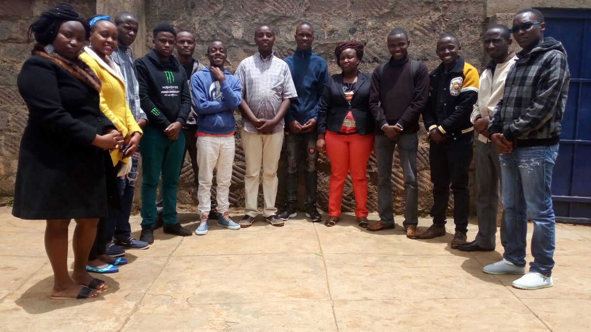

About us
Presbyterian Weavers
 Presbyterian Weavers is a Community Based Organisation that was founded almost two years ago. It is also registered and have a certificate. We are guided by the following key objectives:
- To Promote economic empowerment and ensure meaninful participation of the community in poverty eradication
- To provide education and trainings in matter of sustainable development through networking and collaboration with other organization
- To educate the general public on behaviour changes targeting sanitation,communicable diseases control mainly HIV/AIDS,Tuberculosis and Water borne diseases,drug and Substance abuse among the youth
- To Campaign against traditions that hinder sustainable development in our communities.
- To change as many youths as we can to a sound mindset able to reason and make sound judgment concerning their lives.
- To tap talent among the youths and transform it into self employemnt
- Creation of employment through income Generating activities i.e farming,ICT,trade among others
- To invest in I.T and ICT program in order to equip today's generation with relevant knowledge of the changing times
Achievements
- We have had great achievements in visiting two children’s home where we were having some of our outreach programs. [Agape and iAfrica Children Centers]
- Participated over the last three years in youth week projects which we were able to bring the youths together, motivated them to help assist in some business projects which profits were geared towards maintaining the youth account.
- We have had constructive talks with key people who challenged us on ideas to invest in and projects to undertake. This helped in perception growth and team building bounds. Out of the group we were able to have considerable number of members who agreed to participate in merry go rounds and table banking activities, in conjunction with some outsiders, but all thanks to the support and the cohesion the group brought.
Weaver iLab
This a digital library based at the P.C.E.A Githima Church. Its the main project that we as the Presbyterian Weavers are investing in.The Weaver iLab is aimed at enriching the people of Dagoretti South all about technology. It will cover diverse areas including training programmes for the youth, internet access, photo shoot, printing of high quality posters and T-shirts, branding, graphic design, web design and software development. All these will be done in this Lab some of which will be charged at very friendly prices. It’s a one of a kind lab since there is none like this in Dagoretti area. Since the IT sector is growing vastly we saw the need to educate people and also mentor all technology enthusiast.
Property Management
Property Management will come as an aid to improve and help manage properties which some are owned by the local church and residents. To help improve their income and add value.
Community Radio
With the very much expected growth of the Weaver iLab,investing in communication will also be a set goal where we plan to launch a community radio as a main communication broadcast in the area.